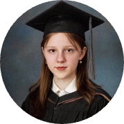
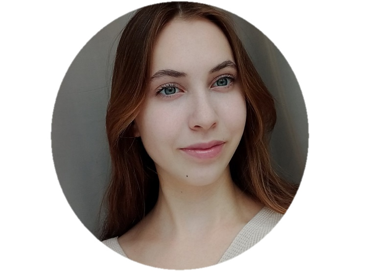

Представляем вашему вниманию нашу команду исследователей, которые работают над изучением свойств микроорганизмов и их влиянием на развитие растений.
Вяткина Дарья
Ответственная за микробиологические исследования

Пермякова Арина
Координатор проекта и аналитик данных
Цирюльникова Елизавета
Специалист по культивированию микроорганизмов

Красноперова Виктория
Исследователь биохимических процессов